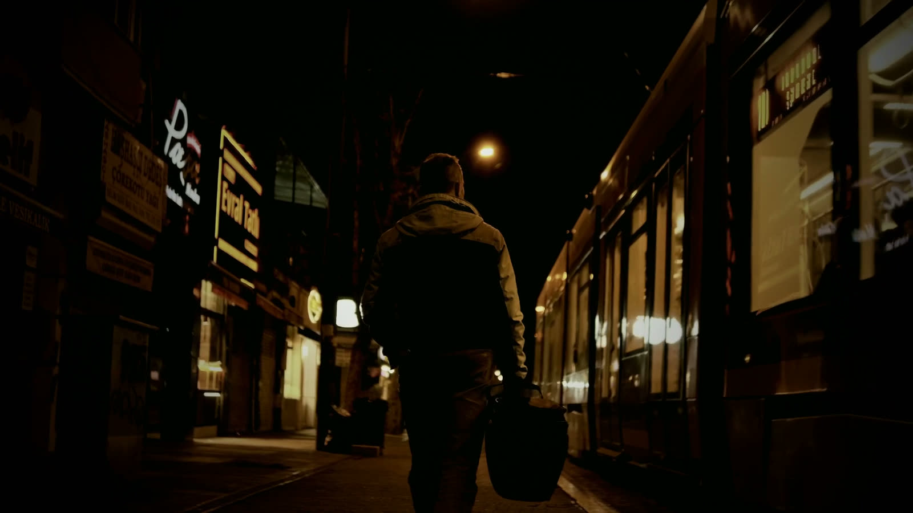
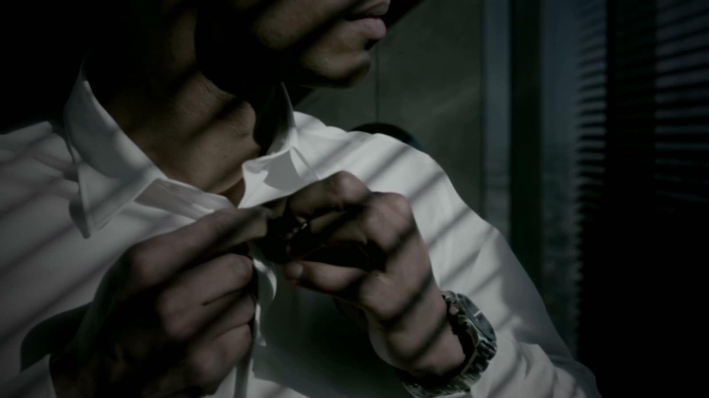
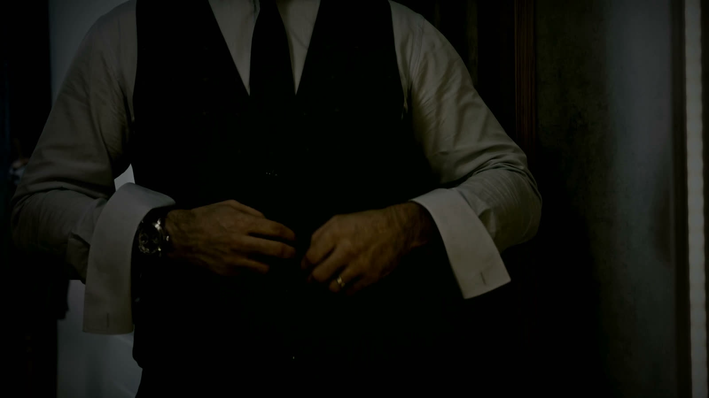
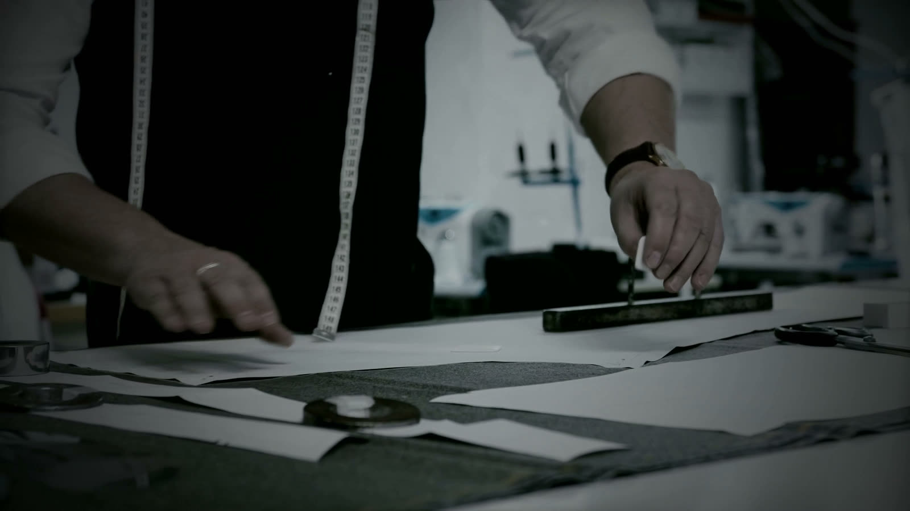
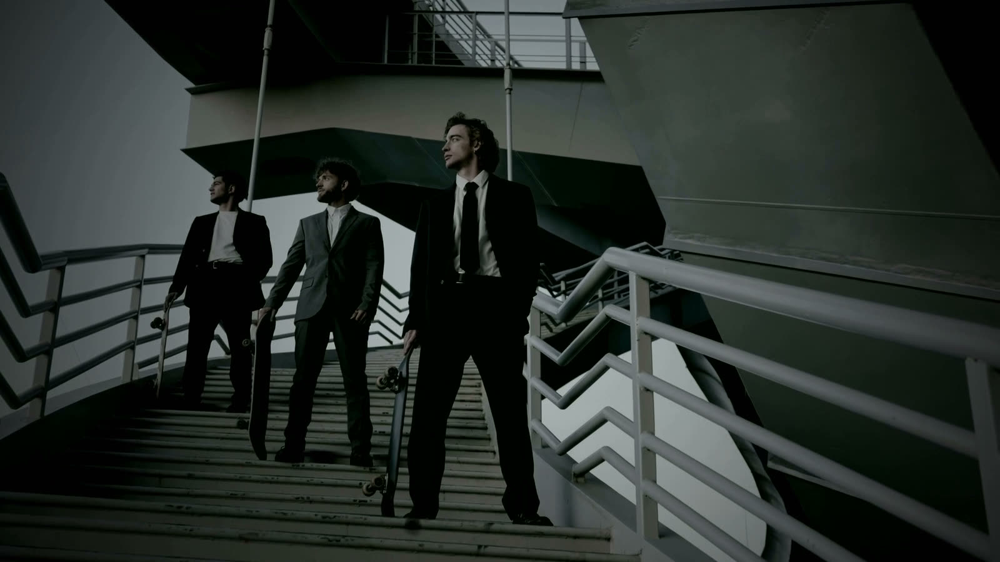

TheAnatomyof a Suit

A Shirt ofPure Cotton
Two-fold poplin, cut to your measure. A collar that holds its line under a tie and sits flat without one.

Cut Closeto the Body
Six buttons, the last left open. Backed in silk and adjusted at the waist so it never rides up when you sit.

Built onFull Canvas
Horsehair canvas stitched by hand from shoulder to hem. Over time it shapes itself to the person wearing it.
Made toBe Worn
Three fittings, then the suit is yours. Built for the way you stand, sit and reach, not for a hanger.

A Languageof Colour
Over two thousand bunches to choose from. Each one says something different in a room.
The LastQuarter-Inch
Working buttonholes, stitched by hand. A quarter-inch of shirt cuff showing below the sleeve. The details nobody notices until they are missing.
Tailoring
for the few.
We take a small number of commissions each season so every suit gets the hours it needs. Fittings are by appointment.
Book a fitting on WhatsApp